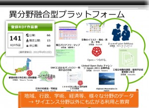

技術コラム 第3回：LinkData.jp
昨年度のLODチャレンジの受賞者からメッセージをいただきました．
今回は，アプリケーション部門の最優秀賞を受賞された下山紗代子さん，吉田有子さん，豊田哲郎さんから，受賞作 LinkData.jp についてご紹介頂きます．
Linked Open Data チャレンジ Japan 2011 にてアプリケーション部門最優秀賞を受賞致しました LinkData.jpについてご紹介致します. LinkData.jpは「誰でも簡単に自分のデータをLinked Dataとして公開できるように支援するサイト」です。利用者はテーブル形式で準備した自分のデータをこのサイトにアップロードすることでRDF形式に変換して公開することができます。
今回の受賞において、特に分かりやすく効果的であると評価していただいた点は、テーブル形式とRDF形式の対比を使って初心者でも簡単にRDFのデータを作成できるようにした点です。RDF の認知度は HTML に比べて低く、一部の専門家を除いてあまり知られていません。幅広い分野で活躍やする多くの人々が RDFでデータを公開していけるようにするためには、RDF に変換するツールを単に提供するだけではなく、彼らが RDF とは何かを分かりやすく学ぶことができ、他者の作成した RDF のデータ構造を参考にしつつ、自らのデータに最適な RDF モデルを自らデザインできるようにするための学習の場を提供する必要がありました。そこでLinkData.jp ではテーブル形式と対比させながら RDF を理解できるように配慮しました。
このサイトで使われている技術は我々がライフサイエンス分野のデータの受け渡しをスムーズに行うために開発したものです。生物学者のほとんどはRDFに詳しくないため、彼らでもデータ登録できるように分かりやすくサイトを構築することを心がけました。このため、専門知識のない幅広い分野の人からデータ登録がなされるようになりました。
現在ではオープンガバメントの流れもあり地方自治体のデータもたくさん登録され、分野横断的なデータ共有サイトになっています。このことは私たちも大変驚いています。なぜなら、これまではライフサイエンスの狭い分野で決めたフォーマットに則ってデータ共有をするスタイルが主流であったため、分野横断的なデータ共有は困難であるということが常識だったからです。これは、RDFは分野を限定しない幅広いデータを扱うことができるからであり、多くの異なる分野で同じサイトを使うことにより、様々な学際的なデータ交流がなされることを期待しております。特に、LODチャレンジに投稿したことで分野横断的にLinkData.jpが知られることになった効果は大きく、このような活動に参加でき、受賞までさせていただいたことに開発者一同、大変感謝しております。
今後のLinkData.jpの展開として、アプリケーションを開発する機能拡張(http://app.linkdata.org)や、地方自治体のデータを共有するサイト(http://citydata.jp)との連携を始めています。また、facebookとの連携でLinkData.jpの中にデータ共有のコミュニティを作る機能や、データ作品やアプリ作品を評価し合えるソーシャルな仕組みも導入しました。また、Google docのエクセルを使ってテーブルデータを共同作業で作成し、そこからすぐにRDF変換する機能も付けました。これにより、サーバを持たない人でもデータ公開とアプリ開発がLinkData.jpのサイト上でできるようになりました。このサイトをLODチャレンジデーで皆様に使って頂き、ご意見をフィードバックして頂くことで、今後益々このサイトを発展させていきたいと願っています。
独立行政法人理化学研究所
下山紗代子，吉田有子，豊田哲郎